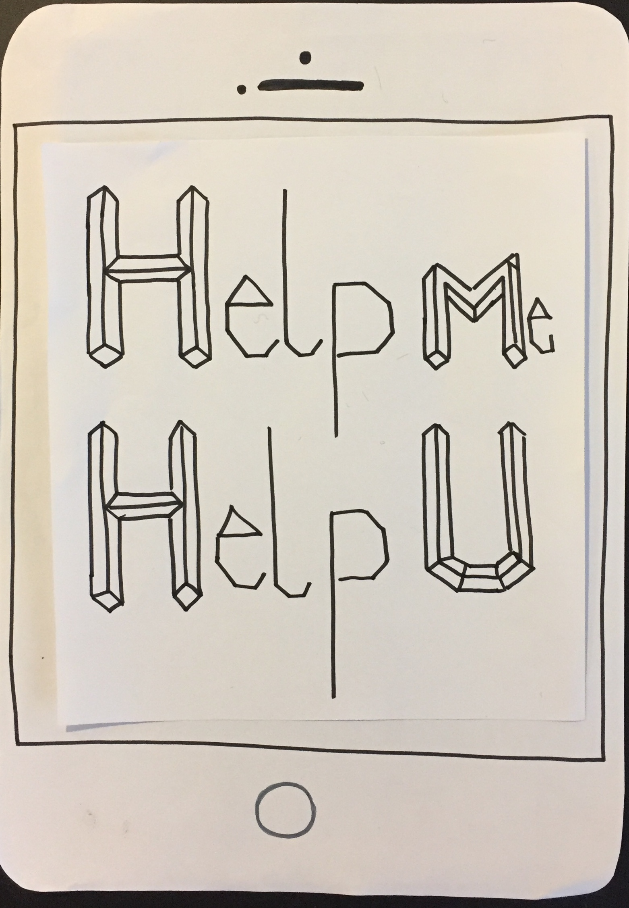

Gruppe 11 - Republikken
Procesdokumentation

RESEARCH

.png)
.png)
Udfra den meningsmåling vi fik fra Republikkens medlemer kunne vi konkludere følgende: At stemningen og det sociale var de to primær grund til folk valgt at blive medlem hos Republikken frem for alternativer. Og over 60% af medlemerne synes det bedste ved arbejde på Republikken var stemningen og det sociale. Dog følte 31% af medlemerne stadig der var plads til forbedring med det sociale, herunder events og aktiviteter de savnede.
Vi valgte at lytte til hvad størstedelen af medlemerne savnede, og besluttede at vi ville lave en app der skulle have samme stemningen og udtryk som i Republikkens bygning og kontorer, samt sætte fokus på at styrke det sociale og faglige gennem hyggelige aktiviteter og events.
PERSONA
MÅLGRUPPEBESKRIVELSE
Republikkens brugere / medlemmer, som lejer en plads i kontorfællesskabet. Medlemmerne er primært selvstændige med eget firma.
Lejerne er unge såvel som gamle, men har alle det tilfælles at de nyder det kollektive miljø.
Nogle lejer lukket kontor, nogle i åbent kontor med ca 40 andre, og nogle lejer blot en plads i cafeen.
Elise Neerup
Alder: 42 år
Ekspertiser: kommunikation, journalistik og multimediedesign
Bopæl: Storkøbenhavn
Elise bor i Storkøbenhavn med sin mand og to børn. Elise har i mange år beskæftiget sig med journalistik og kommunikation. Hun har derfor stor erfaring indenfor dette område. På trods af at hun nød sit arbejde som journalist, kedede hun sig ofte og følte sig ikke udfordret. Derfor startede Elise på Multimediedesignuddannelsen for 3 år siden og blev færdig sidste år.
Hun har efterfølgende skabt sit eget lille firma, som hun nu prøver at få på benene. Da hun blev færdiguddannet var hun klar over, at det ville være en stor udfordring at klare alt selv, uden mulighed for at få hjælp. Derfor meldte hun sig ind i Republikken. Dette skridt har hjulpet hende til at lære nye teknikker og lære noget af sin viden omkring kommunikation fra sig.
Elise har nu været på Republikken i et år, og hendes lille firma går strygende. Dog kunne hun godt tænke sig, at muligheden for at få hjælp var lettere tilgængelig.
Anders-Emil Klausen
Alder: 25
Bopæl: Nørrebro
Beskæftigelse: Webshop ejer.
Anders-Emil har siden gymnasiet arbejdet i en elektronik forretning og er nu i gang med at få egen webshop op og køre, hvor han har planer om at sælge ledninger og andet IT-udstyr.
Anders-Emil har siden gymnasiet haft en masse bolde i luftet og har, i årenes løb, prøvet flere videregående uddannelser af, men altid droppet fra. Han kæmper med at holde fokus på samme opgave i lang tid af gangen hvis emnet ikke interessere ham.
På trods af sin erhvervserfaring, syntes Ander-Emil at det kunne være spændende at drage inspiration fra en mere erfaren entreprenør. Han vil så vidt muligt undgå begynder fejl.
Anders bor i lejlighed på Nørrebro med sin kæreste, og elsker at socialisere og gøre brug af københavns muligheder. Han er ikke bleg for at sige sin mening og er frisk på en udfordring.
THE BUSINESS MODEL CANVAS
EXPERIENCE MAP


PAINPOINT
Mangel på interaktion mellem republikkens lejere/medlemmer.
PAPERPROTOTYPE 1
COME TOGETHER (working title)
Event App er tænkt som en begivenhedskalender hvor man kan ryste folk sammen på kryds og tværs i kontorfællesskabet Republikken.- Som bruger har man muligheden for at deltage, i større events og foredrag arrangeret af Republikken. eksempel. Laser cutter course)
- Muligheden for at deltage i små kreative events, der kan skabe et pusterum i dagligdagen. Disse events varer oftest mellem 15 - 30 min. Det kunne f.eks. være et Waffle Pitch, hvor man både kan få luftet sine tanker omkring sit projekt eller udveksle ideer, over en omgang vafler eller en kop kaffe.
- Alle bruger har mulighed for at oprette et event til kalenderen, hvor man kan indsætte et billede og en kort beskrivelse. Det er med til at skabe engagement i fællesskabet og give plads til at sætte et socialt eller fagligt præg på hverdagen i Republikken.
- App’en er med til at styrke det sociale, kreative og faglige. Det skaber en hverdagskommunikation med fælles interesser og samlepunkter på adressen.
{kind=link}
PAPERPROTOTYPE 2
Help me - Help U
Help me - Help U er en app, som fungerer som et menneske leksikon. Dvs. man har mulighed for at slå op/ søge efter hjælp i appens søgefunktion.- I appen skal man som det første udfylde sin profil. Den skal indeholde et billede, navn, alder, uddannelser, jobs, nuværende beskæftigelse, kontaktinformationer, evt. yderligere kommentarer, ekspertiser. altså hvilke programmer/fagligheder man mestrer, og hvor man befinder sig på republikken.
- Appen fungerer som en stor søgefunktion, hvor man får hjælp af andre “kollegaer” på republikken.
- hvis jeg søger på css (kodning) kommer de mennesker frem, som besidder denne ekspertise (da de har oplyst det i deres profil). De vil komme frem i en rangliste, hvor den der har hjulpet med et lignende problem kommer frem øverst.
- Så har man mulighed for at klikke på den mand/kvinde man vil, se deres profil og man kan herfra skrive til dem over appens chat. Man kan stille sit spørgsmål i chatten, eller man kan spørge om man kan komme forbi og få hjælp i 5 minutter, eller hvad det kunne være.
{kind=link}

PAPERPROTOTYPE 3
Take a break
Opfordrer de arbejdende til at holde pause sammen. sender notifikation om at man ta’r et break og om folk vil joine. minder folk om at holde pauser. + notifikationer om pauser.- I Take a break bra er der en oversigt over hvem der er til pause, samt mulighed for at oprette sin egen pause. + evt. mulighed for at slå regelmæssige pause notifikationer til. Man opretter sig med navn, mail etc. og har derefter adgang til appens features.
- Ved oprettelse af pause, skriver man: Hvor man går hen (fx. baren, kantinen, etc.), Hvad man gør (fx. drikker kaffe, ryger, etc.), Hvor lang tid (fx. 5 min, 10 min, etc.)
- Pausen vil derefter være på den fælles oversigt i den tidsramme man har sat. + evt. feature hvor man kan trykke “joiner” eller “like” evt. følge visse personer, så man får notifikation når de holder pause
- Take a break bra vil give et boost til både arbejdsindsats og det sociale i republikken.
{kind=link}
BENCHMARKING OG IDEVALG
VALG AF IDE PÅ BAGGRUND AF BENCHMARKING-ANALYSE
Valget af ide er baseret på den App med højeste score. Hver ide er blevet tildelt en score mellem 1 og 10. - Hvor 1 er lavest og 10 er højest. Benchmark score
Help Me Help U: 20,3
Take a Break: 18,9
Get Together: 21,05
Help Me Help U har en høj score, da den ligesom ideen Get Together har gode forudsætninger for Republikkens brugere og virksomheden. Grundet konkurrence på Marked valgte vi at skrotte ideen, da vi fandt en næsten identisk App der er gratis og kunne det samme, plus lidt ekstra. Dog gennemgik vi konceptet igen, men konkluderede at det simpelthen ville kræve for meget at revurdere og tilpasse designet i forhold til at udbyttet. Ud fra dette har ideen en lav værdi.
Take a Break:Det interessante ved denne ide er at konkurrencen er forholdsvis ikke eksisterende på Marked, hvilket gør ideen enkel, simpel og spændende at videreudvikle og arbejde videre på. App’en er realistisk men da værdien for målgruppen og firmaet er mindre mærkbar, er værdien for app’en ikke særlig højt. Både set ud fra benchmarking analysen og på ideplan.
Get Together:App’en Get Together favner målgruppen bredere end de 2 andre ideer og som førnævnt har den gode forudsætninger for virksomheden og brugerne da Republikkens Value Propositions lægger vægt på brugeren, networking og relationer. Konkurrence er stor da der er mange event apps, men ideen er realistisk da den skal designes til intern brug.
Valg af ide – Opsummering
Vi har valgt at gå videre med App’en Get Together på baggrund af benchmark scoren, da den ud fra vores analyse har den højeste score og dermed har ideen også størst værdi og det bedste potentiale for at klare sig på Marked. Ud fra Republikkens problemstilling og vores Paintpoint opfylder denne ide behovene bedst for bruger og virksomhed.
DESIGN PROCESS
PROCESS DOKUMENT
STYLETILE
.jpg)
Vores mål, med app'ens design, var at den skulle føltes hyggelig og hjemmelig, samtidig med at den skulle afspejle Republikkens lokaler og stil. Vi valgte jordnære farver der giver et hyggeligt udtryk samt grove teksturer inspireret af Republikkens egne billeder.
IKON
Stilmæssigt skulle vores ikon lægge sig op af Republikkens Logo, så det virkede genkendeligt og så det passede ind stilmæssigt med Republikkens udtryk.
Vi blev hurtige enige om at et håndtryk er en god måde at signalere profesionelle og forholdkammeratskab.
LINKS
Se vores daily scrum meetings:
Klik Her
Se vores Trelloboard:
Klik Her
Præsentationssite:
Klik Her
Burn-downchart
Klik Her
GRUPPE 11
Rikke Dyreby

Frederik Erichsen

Ida Lygum Pedersen

Mahnaz Hashemiaghdam

Simone Juul Andersen